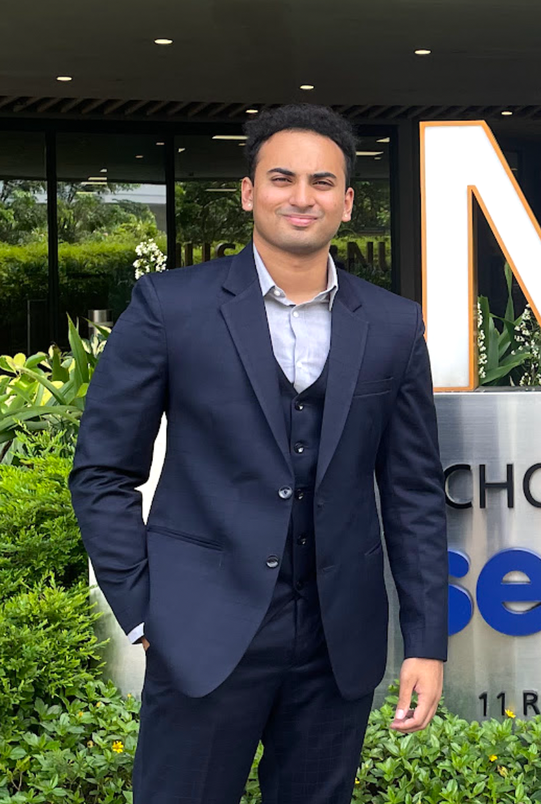
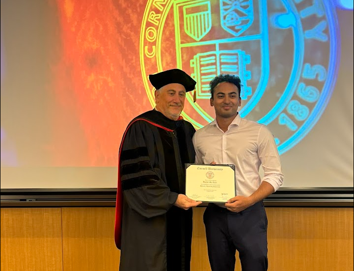
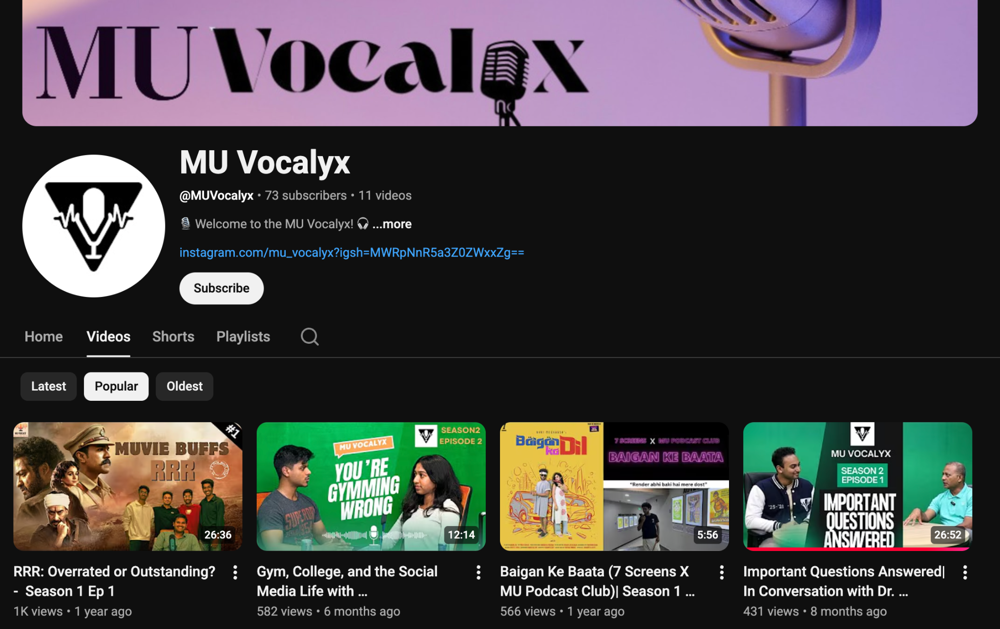
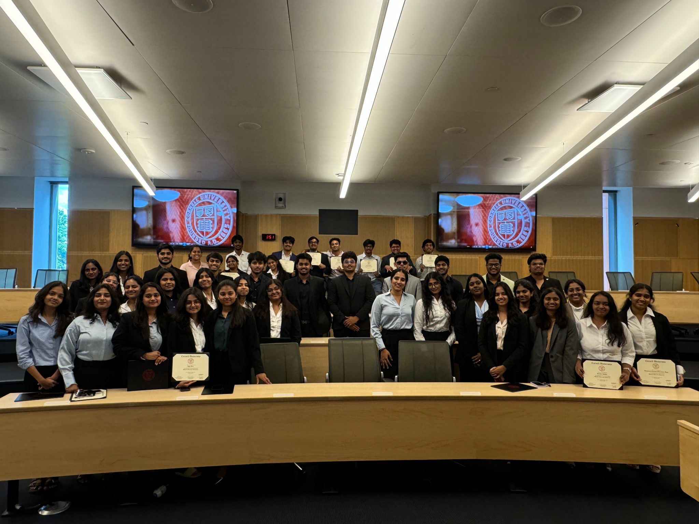

café
adda
adda
Cafe Adda Buzzer System
A campus café queue problem, addressed with a web-based token notification tool.
BUSINESS ANALYTICS · DATA STORYTELLING
I’m a Computational Business Analytics student who enjoys turning data into clear, useful decisions.

A selection of my research, analytics, strategy, and product work.
A campus café queue problem, addressed with a web-based token notification tool.
Explored stock-price patterns using statistical tests and ARIMA forecasting.
Analyzed 7,043 customer records using predictive modeling and Power BI to explore churn risk and customer segments.
A team proposal for a renewable-energy company, focused on digital content, competitor research, and KPIs.
Understanding the decline of emerging graduates in India.
Group research into factors influencing educational outcomes, using quantitative and qualitative analysis.
A proposed marketplace for student and young-professional accommodation.
A student-housing marketplace concept covering customers, competition, revenue, and operations.
Team projects are identified as collaborative; descriptions reflect project scope.
Understanding how LLM-generated fake reviews may shape shopping-assistant advice.
Submitted to InCIS 2027, this study proposes a live-platform observation and controlled experiment to test when fabricated review claims appear in AI-generated product advice.
Read submitted paper ↗
MAHINDRA–CORNELL IMMERSION · 2024I’ve always been interested in how ideas connect with people.
Through experiences such as the Cornell Immersion Program, I gained exposure to new perspectives and learned to ask questions, listen, and communicate clearly.
At Mahindra University, statistics, econometrics, and linear algebra showed me the quantitative side of uncovering stories and supporting them with evidence.
Podcasting and team leadership have taught me to listen and collaborate.

STUDENT PODCAST CLUBLed the student podcast club, coordinated content, and hosted episodes.
Visit the MU Vocalyx channel ↗
2024Collaborated on a startup business canvas during the Mahindra University–Cornell immersion.
View immersion credential ↗Select a credential to view the certificate or verification page.
National University of Singapore · School of Computing
June 2025Cornell University · SC Johnson College of Business, through eCornell
July 2024University of California, Davis · Coursera
September 2026AWS Academy
August 2026Verify digital badge ↗